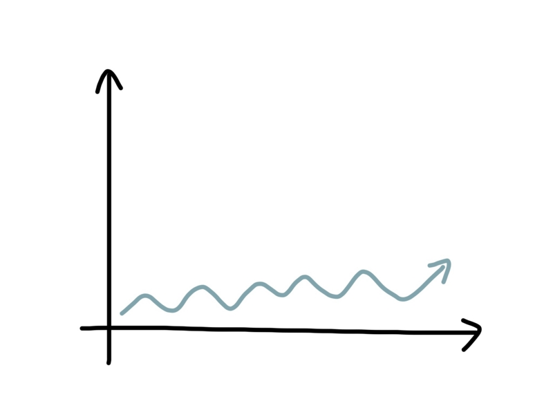
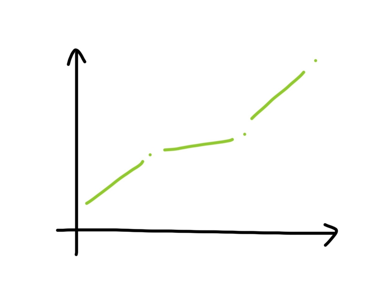
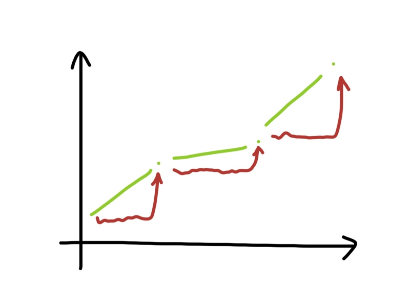
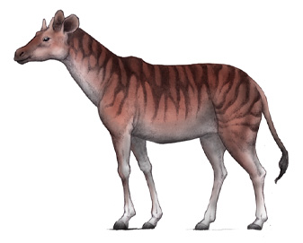
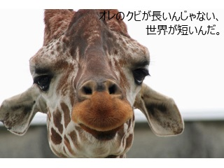
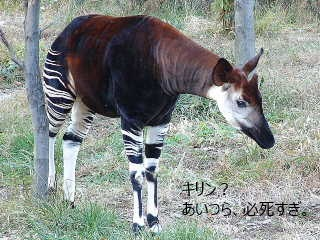

『主体性の進化論』
公開日：
")
- 作者: 今西錦司
- 出版社/メーカー: 中央公論新社
- 発売日: 1980/07/25
- メディア: 新書
- この商品を含むブログを見る
本書は『ダーウィン論―土着思想からのレジスタンス (中公新書 479)』の続きらしいのだが、自分はそれを読んでいない。というのも、Amazon のオススメにでてきたものを、中身も吟味せずに中古で購入したからだ。少し残念なことをした。
僕やあなたが主体性をもつように、国や会社もひとつの主体性をもつと一般に考えられている。ならば、種社会にも主体性（自立した意志のようなもの）を認めてもいいのではないか。そうしたほうが、ワーグナーの隔離説やアイマーの定方向進化説よりも“種の起源”――なぜどうやって“種”が生まれたのか――を明らかにしやすい、というのが本書の主張だ（と思う）。
進化における3つの大問題
進化の問題は、大きく3つに分けることができる。
- 種の起源
- 適応の起源
- 系統の起源
ダーウィンは『種の起源』というタイトルの本を記したが、これが解決したのはあくまでも“適応の起源”の問題だけだった（自然淘汰説）。気の長くなるほど長い時間をずーっと自然選択に任せていれば、いずれ種は分化し、系統だてられていくだろう、と極めて大雑把に“予言”したに過ぎない。その現場など、誰も見たことはない。

そもそも種と言うのは結構安定的で、シーラカンスみたいに数億年もそのままで続いているものもある。今生きることができているのは、種が今の環境に適応できているからであり、もし今の状態が最適であるのならば、むしろ突然変異するほうが不利だと言える。“進化”は遅々として進まないだろう。地理的隔離、生殖的隔離が種の分化に繋がるだろうというワーグナーの隔離説は一見もっともだけれど、遺伝子的に近い種が近接して棲んでいる例はそれほど少なくはない。2つの瓶に隔離したハムスターを何世代も交配すれば、いずれ違う種になっていくのだろうか。それこそ何億年も時間をかければそうなるのかもしれないけれど、シーラカンスの例を思うとちょっと納得いかない。自然選択だけで種が分化した例を目の当たりにした者は、いまだかつていない。たぶん、自然選択と隔離だけではなにか足りないのだろう。

一方、アイマーの定向進化説定方向進化説（オーソゼネシス）は“化石”というリアルな資料に基づいている。ウマの祖先といわれるヒラコテリウムは、たしかにウマに似ている（ウマの進化 - Wikipedia）。化石という点を線で繋いでいけば、進化には一定の方向性があるのではないかと思いたくなる。定向進化説は、自然選択理論よりも“系統”についてよい答えを与えている。
しかし、定向進化説の弱点はその“線”にある。なぜその線が引けるか、引いてよいのか、つまり、進化の方向性をどうやって説明するのかという問題だ。環境？ 内在的性質？ どっちにしろ、自然選択のような説得力のある答えではない。
今西は定向進化説にシンパシーを寄せていて、ラマルクの獲得形質の遺伝説までもちだし、“進化するときは、種がまるごと、いっぺんに変わる”と主張している。
個人的には、この“進化するときは、種がまるごと、いっぺんに変わる”という主張は正しいと思っている。ただ、種の主体性やラマルクまでもちださなくてもいいのではないかと思った。
大進化と小進化
ここでキーになるのが大進化と小進化の概念だ。

小進化では、種と環境の関係が比較的安定している。突然変異で自然に対してトライアル＆エラーが行われている“自然選択”の状態だ。ただ、何かのきっかけでその関係が崩れ、種と環境が競争的な関係に陥ることがある*1。

パレオトラグス*2という生き物が手当たり次第木の葉を食べると、木は葉を食べられないよう、背丈を伸ばすだろう（自然選択により結果的に）。そうなれば、パレオトラグスも首を伸ばすしかなくなるだろう。筋トレをすれば腕が太くなるように、遺伝によらなくても、毎日首を伸ばしていれば首が長くなるだろう。親だって子どもに「首を伸ばせ、でなければウマいメシにありつけないぞ」と教えるだろう。戦後、女子のバストが順調に大きくなってきたように*3、パレオトラグスの首も伸びるだろう。すると、木もそれに対抗して背丈を伸ばすだろう。こうして「その場にとどまるためには、全力で走り続けなければならない（It takes all the running you can do, to keep in the same place.）」という関係ができれば、大進化が起こる。キリンさんの誕生だ。

キリンの首が長いのではない。首を長くできた選ばれし者がキリンなのだ。なにがキリンかはそれほど重要じゃない。キリンであることとは何であるかのほうが重要だ。キリンであることとは、一種の理念であり、自分たちを縛るルールでもある。これに従わないものは、キリンではない。だから、そのルールが変われば、キリンも変わる。

一方、「はぁ？ なんでそこまでして高い木の葉っぱ食ってんの、バカじゃね、やってらんねー」と思うグループもいるだろう。かれらは、オカピになる。彼らはキリンになることを拒んだグループだ。*4
今西の言うとおり獲得形質が遺伝するかといえば、個人的には少し飛躍し過ぎかなぁ、と思う。ただ、そういった“環境との付き合い方”そのものが種社会に保存されて（人間で言えば、文化・伝統・慣習）、それがベストプラクティスとして個体に受け継がれるというのは十分考えられうると思う。この考え方で言えば、社会的な種であるほど個体は同一性を保ちやすく、単体行動をする種ほど個体差が大きいであろう――んー、そんな感じもないか。
ともかく、最近はハゲになる遺伝子だの、ガンを抑制する遺伝子だのが次々に見つかってると聞くけれど、でもそれだけじゃないでしょ？ というのはある。ああいうのは RPG でいえば初期パラメーターと成長のウェイトにぐらいしか影響していない。だから、戦士を魔法使いに育ててもいいだろうし、魔法使いを僧侶に育てても構わないはずだし、それは可能だと思う。まぁ、確かにそれはマゾゲー（リアルな！）で、詰めば“自然淘汰”されるのだろうけれど。
")
- 作者: エドワード・O ウィルソン,Edward O. Wilson,岸由二
- 出版社/メーカー: 筑摩書房
- 発売日: 1997/05
- メディア: 文庫
- クリック: 5回
- この商品を含むブログ (5件) を見る